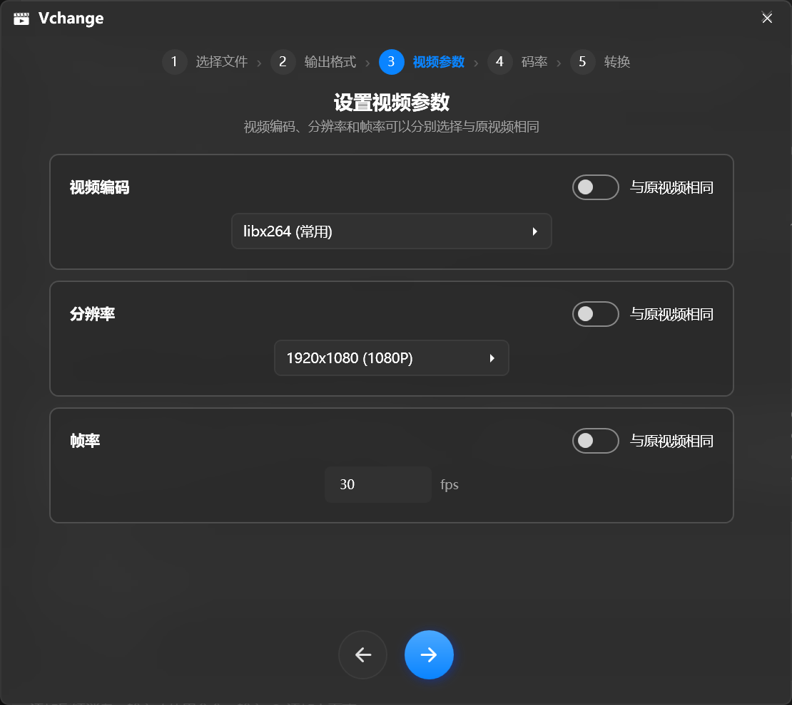

Vchange v1.2.0 · Windows 10 / 11（64 位） · GPL-3.0 开源
四个工具，一次装齐
打开首页，
先选要做的事。
视频转换、延时合成、图片堆砌、图片转换——同一套向导式界面，同一套参数逻辑。
图片格式转换
JPG / PNG / BMP / TIFF / WebP / WMP / DNG 互转，品质滑杆、TIFF 压缩算法、PNG 交错与输出分辨率全部可调。
技术规格
看看里面有什么。
- 系统要求
- Windows 10 / 11（64 位）
- 核心功能（4 项）
- 🎬 视频转换 · ⏱ 延时合成 · 🌌 图片堆砌 · 🖼 图片转换，主页一点即入，全部为引导式界面
- 转换引擎
- ffmpeg 9.0.2 完整版（内嵌，约 217 MB，首次使用自动释放）
- 运行时
- .NET 8（已内嵌，无需另行安装）
- 主程序
- 单个 exe，约 372 MB，免安装绿色版
- 视频输出（21 种）
mp4mkvavimovwebmflvwmvmpgtsm4v3gpvobogvm2tsrmrmvbasfmxfhevcgifapng- 图片输出
- 转换：
JPGPNGBMPTIFFWEBPWMPDNG；堆砌：JPGPNGBMPTIFFDNG（16-bit 线性 DNG，不含 EXIF 元数据） - 视频编码
- 软件编码 libx264 / libx265；硬件加速 h264 · HEVC · AV1（NVENC / Quick Sync / AMF / VAAPI）；编码、分辨率、帧率均可选择「与原视频相同」
- 分辨率预设
- 360p · 480p · 720p · 1080p · 1440p · 4K · 8K（7680 × 4320），支持自定义宽 × 高；码率按分辨率自动推荐，可手动调整
- 界面
- 简体中文 · 深色 / 浅色主题跟随系统 · Windows 11 亚克力毛玻璃 · 自绘无边框圆角窗口 · 记住窗口位置
- 许可证
- GPL-3.0 License，免费开源
v1.2.0 · 2026 年 10 月 · 最新稳定版
下载 Vchange。
免费、开源，为 Windows 10 / 11 而生。
下载慢？123 云盘高速镜像 ›
⚠ 高速链接仅对最新版本有效：每次发布新版本后旧的高速链接即失效，请始终以本页面的最新链接为准。
Vchange.exe（约 372 MB）—— 推荐
单文件绿色版，内置 .NET 8 运行时与完整版 ffmpeg，下载后双击直接使用。
ffmpeg-9.0.2-full.exe（约 217 MB）—— 进阶可选
完整版 ffmpeg 命令行工具，普通用户无需下载；适合需单独使用 ffmpeg 的进阶用户。
首次转换时会自动释放内嵌的 ffmpeg（约需几秒），仅此一次，之后复用。
无需安装 .NET 运行时，也无需单独配置 ffmpeg。
支持
常见问题
v1.2.0 新增了什么？
视频转换与图片转换全面支持批量：浏览框可多选文件，多文件时自动改为选择输出文件夹，逐个转换并显示
i/N 进度、逐条日志，同名输出自动加序号互不覆盖。同时修复：延时合成 / 图片堆砌在纯 DNG 文件夹上误报「没有找到图片文件」（现已识别 .dng / .wdp / .jxr），保存对话框默认打开源文件夹。v1.1.0 的四合一功能保持不变。查看完整更新 ›转换失败怎么办？
查看「转换日志」中 ffmpeg 的原始输出，通常会明确指出失败原因——例如源文件损坏、编码器不支持等。仍无法解决？提交 Bug 反馈 ›
为什么第一次转换会慢一点？
首次转换需要把内嵌的 ffmpeg（约 217 MB）释放到
%LocalAppData%\Vchange\ffmpeg.exe，只需一次，之后立即可用。支持硬件加速吗？
支持。视频编码下拉框中可选择
h264_nvenc（N 卡）、h264_qsv（Intel 核显）、h264_amf（A 卡）等硬件编码器，另有 HEVC 与 AV1 硬编码可选。堆砌和转换会写入 EXIF 信息吗？
不会。堆砌与图片转换生成的是不含 EXIF 元数据的纯净图片（16-bit 线性 DNG 同样不含 EXIF），拍摄信息请以原图为准。
GitHub 下载速度慢？
可使用高速镜像：123 云盘 · Vchange.exe ›
注意：高速链接仅对最新版本有效——每次发布新版本后，旧版本的高速链接会失效，请以本页面与 README 中的最新链接为准。
注意：高速链接仅对最新版本有效——每次发布新版本后，旧版本的高速链接会失效，请以本页面与 README 中的最新链接为准。
首次运行提示「无法验证发布者」/「Windows 已保护你的电脑」？
正常现象：本程序未购买商业代码签名证书，Windows 对未知发布者软件会要求确认，并非病毒误报。蓝色框点「更多信息 → 仍要运行」，灰色框点「运行」即可；每个新构建第一次运行会询问一次。若遇到无法创建解包目录而闪退，把 exe 移到英文路径（如下载文件夹）再运行即可。
如何从源码构建？
安装 Visual Studio 2022 / .NET 8 SDK，将完整版 ffmpeg.exe 放入 Resources\ 目录后执行
dotnet publish。详见 README 构建指南 ›